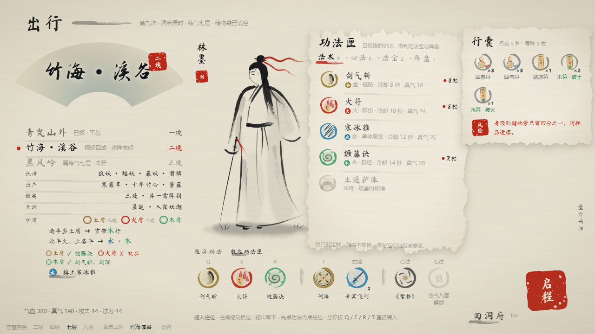
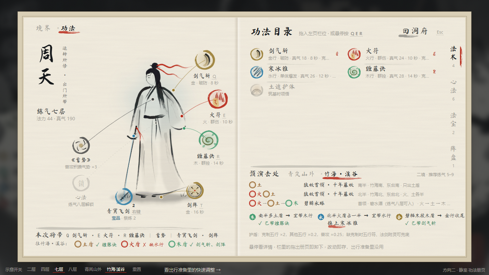
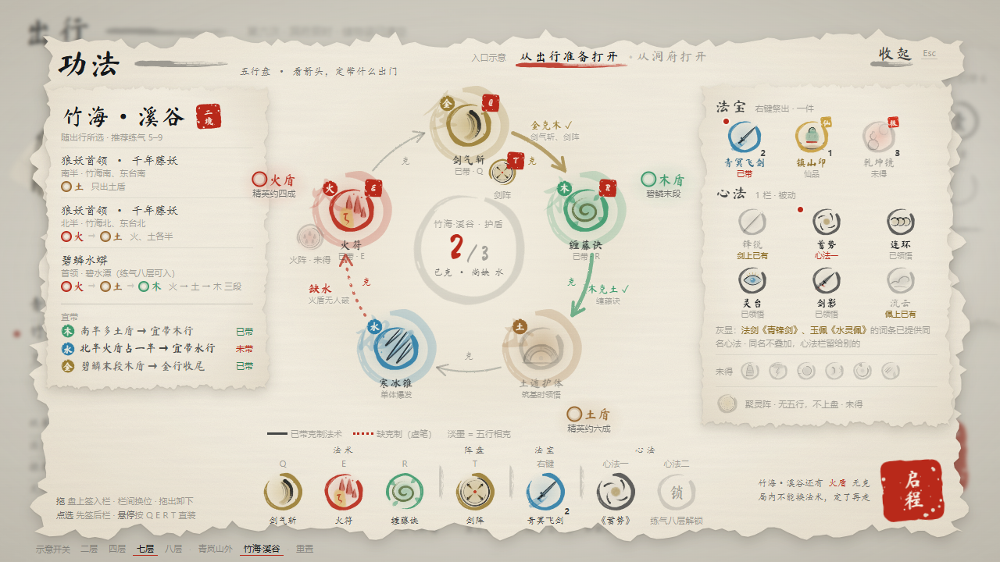

装配 v2 · 可交互草图
方向一 · 出行·随身（推荐）
方向二 · 静室·功法册页
方向三 · 五行盘
并排总览
说明与选择题见
docs/ui/v2/装配_v2_方案.md
· 每个方向左下角有"示意开关"（境界二 / 四 / 七 / 八层、去处、重置），用来看锁定栏与不同去处的护盾提示

方向一 · 出行·随身（入口 a，推荐）

方向二 · 静室·功法册页（入口 b）

方向三 · 五行盘（入口 c）